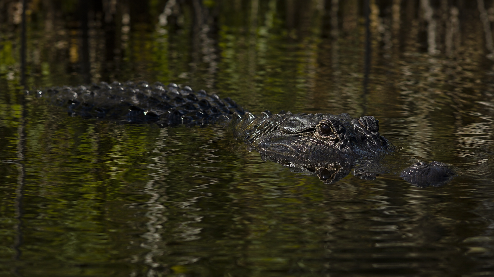
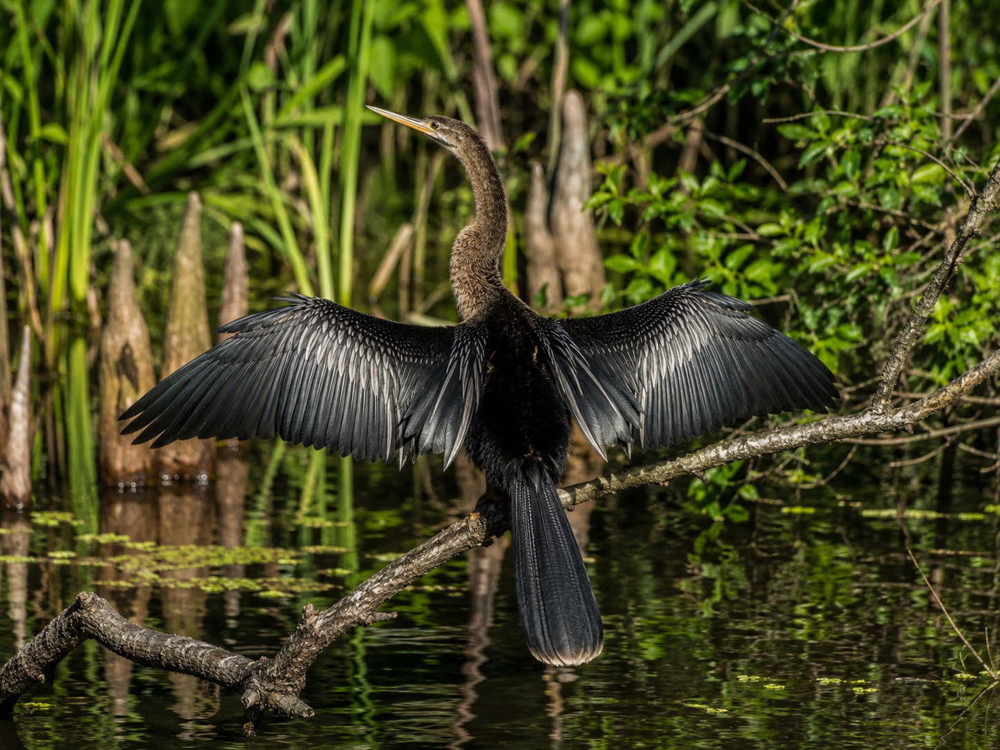
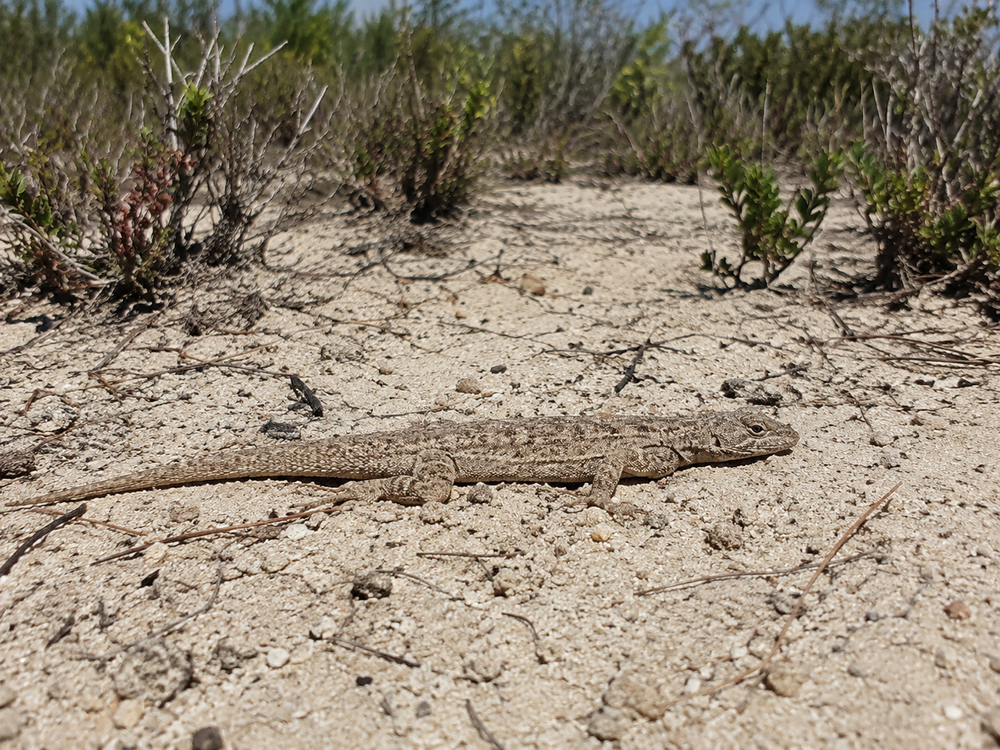

Hold that question as you work. By the end, you'll be able to answer it with real evidence from Florida's habitats.
Start here. Learn the words you will use today.
Picture this: it's early morning in a Florida swamp. The water is dark and still. Tall cypress trees rise out of the mud. A great blue heron stands perfectly still at the water's edge. Something moves just below the surface — two small bumps glide slowly toward shore.
Those bumps are an alligator's eyes. It can see you without you seeing it.
Every observation matters — even small ones. Scientists always start by looking carefully before they explain anything.
These are the words scientists use when they study how animals survive. Tap each card to flip it and read the definition. You'll see these words all the way through the lesson.
Copy this sentence carefully into your science notebook:
"An adaptation is a trait that helps an animal survive and thrive in its habitat."
Now learn the main science idea.
Florida is not an easy place to live. Summers bring heat, floods, and hurricanes. Winters can turn surprisingly cold. The swamps, scrub forests, and coastlines all demand different skills from the animals that live there.
That's where adaptationsAdaptationA body feature or behavior that helps an animal survive in its habitat. come in. An adaptation is a trait — passed down from parents — that gives an animal an edge in its environment. It might be a body part, a color, a behavior, or even the shape of a foot.
The American alligator is built for Florida's wetlands. Its eyes and nostrils sit on top of its head. That means it can float almost completely underwater, breathe, and watch for prey — all at once. Its rough, dark scales blend with mud and shadows. That's both camouflageCamouflageColors or patterns that help an animal blend in and hide from predators or prey. and armor.
The Florida panther is harder to spot. Young panthers are born spotted, which helps them hide in dappled forest light. Adults have tawny tan fur that fades into the shadows of pine flatwoods. Their large, padded paws let them move quietly — an important trait for a predatorPredatorAn animal that hunts and eats other animals to survive. that relies on surprise.

Not every animal can survive in every habitatHabitatThe natural place where an animal lives and finds what it needs to survive.. A panther's padded paws work great in a pine forest but wouldn't help at all in a deep swamp. An alligator's flat, powerful tail is perfect for swimming but slows it down on dry land.
Animals whose traitsTraitA feature of an animal's body or behavior that it inherits from its parents. match their environment tend to survive and have young. Their young inherit those same helpful traits. Over time, the animals in a habitat end up very well-suited to where they live.
Real-World Connection: The Florida scrub — a dry, sandy habitat found nowhere else in the world — is home to the Florida scrub-jay, a bird with a strong, curved beak perfect for burying acorns. It evolved in that one specific place.
Animals with traits that match their habitat survive better, have more young, and pass those traits on. Over time, this is why Florida's animals look and act the way they do — each one shaped by its habitat.
This is the core idea of 3-LS4-2: variations in characteristics can provide advantages in surviving and reproducing.
Curious? Go Deeper
Why do young Florida panthers have spots? Newborn panthers can't run fast or hide easily. The spots break up their outline against the dappled light on the forest floor, making them very hard to see. By the time they're about six months old — fast enough to escape most threats — the spots fade. That timing is not a coincidence.
Scientists call this kind of adaptation a life-stage trait. The trait is most useful at the most vulnerable time in life. Many Florida animals have versions of this: young alligators have yellow stripes that fade as they grow large enough to defend themselves.
Now test the idea yourself.

You've just read about several Florida animals and their adaptations. Now it's time to look closely and think like a biologist. Work through the steps below and record everything in your science notebook.
Study the photo above. Look at the anhinga bird carefully. Write two things you notice about its body. What does each one help the bird do?
Copy the chart below into your science notebook. For each Florida animal, write one key adaptation and explain how it helps the animal survive. Use what you learned in the lesson.
| Florida Animal | One Key Adaptation | How It Helps the Animal Survive |
|---|---|---|
| American Alligator | ||
| Florida Panther | ||
| Anhinga | ||
| Green Tree Frog | ||
| Florida Scrub Lizard |
Choose your favorite Florida animal from the chart. In your notebook, write 2–3 sentences explaining why its adaptation makes it well-suited to where it lives. Use at least one vocabulary word from the Vocabulary page.
Think about one animal that probably could NOT survive in a Florida swamp. Write its name and explain what's missing — what adaptation would it need that it doesn't have?
Good scientists think through their observations clearly — not just "it was cool" but specifically what they saw and what it means. You'll write your best explanation in the Assignment tab.
Tell the story of your investigation: which animal you studied, what you found out about its adaptations, and the one thing that changed how you think about Florida wildlife.
Talk these over in your mind — or with a family member — before you move on.
Check what you understand.
Show what you learned.
🔍 Part A — Match the Adaptation
Match each adaptation to the Florida animal it belongs to. Write your answers in your science notebook.
Word Bank: American alligator · Florida panther · Anhinga · Green tree frog · Florida scrub lizard
🚀 Part B — Short Answer
Answer in complete sentences. Use your vocabulary words!
A Florida scrub lizard and a green tree frog live in very different places. How do their adaptations help each one survive where it lives?
What do you think?
💡 Start with: "I think the scrub lizard and the tree frog survive in different places because…"
What did you learn that supports your thinking?
💡 Start with: "I know this because the lesson showed that…"
Why does that make sense?
💡 Start with: "This makes sense because animals that match their habitat…"
📚 Try to use at least one of these words: adaptation, camouflage, habitat, trait
🎨 Part C — Draw & Label
Pick any Florida animal from this lesson. Draw it in its habitat and label at least 3 adaptations. For each label, write one word that names the feature.

Submit your work on Canvas using one of these options:
Make sure your submission includes all of these: